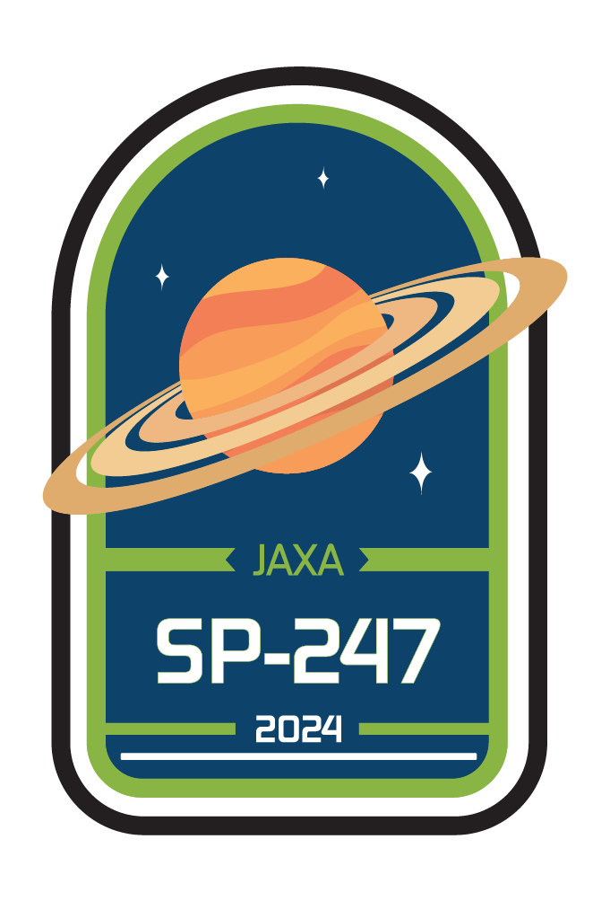

emblem
This patch represents the mission SP-247 and is worn by everyone affiliated with said mission. Design consists of an illustration of planet Saturn, the mission's destination, space organization JAXA, the project's name, Mission SP-247, and the year when the mission will take place.
